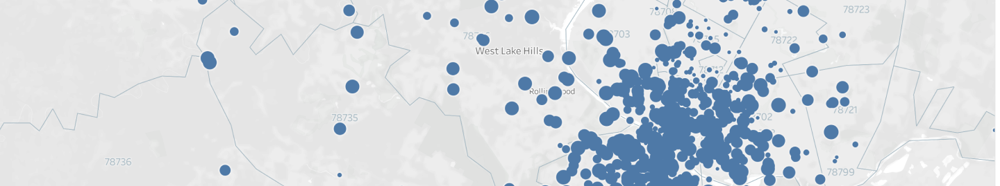
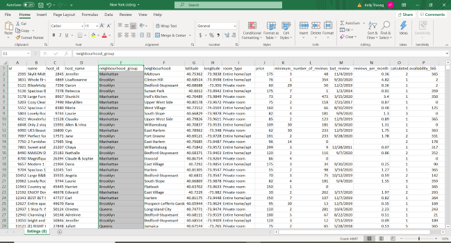

Full critque of our dataset, including analysis on data source, variables, and potential implications
The Data

Our group is using the dataset about Airbnb listings made by InsideAirbnb. We chose datasets of larger cities to focus on, which contained Airbnb listing locations and dates the listings were made. Each dataset contains an abundance of information about the characteristics of every home listing. These variables can reveal specific trends that can communicate the effects that the Airbnb company may have in a particular city and consumer preferences. Because the Airbnb data sets contain a lot of information about every listing, we decided to extract the variables that have the most significance, such as the location, pricing, availability rate, type of property, Airbnb rating, the host response rate, and much more. Every dataset contains information about the neighborhoods the listings reside in, which is considered as nominal data. Categorizing listings by neighborhoods could reveal how users choose an Airbnb, possibly reflecting any biases or preferences to a specific area in a city. The type of listing describes whether the listing is a singleroom, whole apartment/home, shared room, or a hotel room, which are nominal variables. The room type is likely meant to report the amount of lodging space in a listing, but as a nominal variable could also correspond to the housing market of a city. The price per night of the listings are also available, which is a ratio variable. The rating number is reported as interval data, which is likely done so to summarize a listing’s quality easily but lacks explanation to what users prefer in Airbnbs.
a screenshot of InsideAirbnb’s website where data was accessed

An excel workbook of the listings data for Airbnbs in New York
All of this information and data has the potential to illuminate the impact that Airbnb has on a city and its community members. It can show how the quantity and timing of Airbnb listings respond to external events like local city policy changes about residential living. We can look at popular Airbnb listings and how they relate to tourism. We can also analyze the common property types for rentals and their actual frequency of use, for example, house, apartment, condominium, or room, and whether or not there is a discrepancy between Airbnb’s official statements and the actual usage of their platform. For instance, as the website states, a large part of the debate between Airbnb proponents and the residents and government representatives who oppose Airbnb in their neighborhoods is centered on actual Airbnb usage, as “Airbnb claiming that their hosts only occasionally rent the homes in which they live,” but the reality is that they can use Airbnb much more regularly than that. In terms of phenomena, we can see the types of units being rented out short term, availability through a month/year, and reviews.
Through Airbnb’s peer service platform, it allows property owners to take advantage of the profitability of short term leasing.
We are able to infer the cause of these external events are due to Airbnb since the dataset is unbiased, being generated from publicly available information compiled directly from the Airbnb website. Data is verified, cleansed, aggregated, and then added to the database. The location data is anonymized considering the distance as well as the actual location for the listing – no private names or exact address details are listed. On the details section of theInside Airbnb website, the creators of the dataset address some of their different methodologies, which include, for instance, extracting reviews of listings and presenting that as a statistic. These review scores are impacted by their location, the type of residence, their price, and a myriad of other factors that can shed light on the nature of that city’s Airbnb listings. The listings, in terms of date, range from the given listings for a day but also listings that are available up to 365 days in advance from that date. The original source for this dataset is Airbnb listings on the platform, accessible through the website or app. The site was made by an independent digital storyteller, Murray Cox, who sought to provide consumers with more information about the truth of Airbnb listings. On the one hand, this indicates the data is likely a reliable reflection of the reality of Airbnb because it is not funded or related to Airbnb, and therefore more likely to portray negative aspects of listings that contradict Airbnb’s official public relations statements. On the other hand, it’s possible that the mission statement of the website could lead to intentional or unintentional biases in the collection of the data. Even though this website states that it is not funded by Airbnb competitors, it definitely adopts the angle that Airbnb is often hypocritical in its company stance and deliberately evades government regulations. The information that is left out of this dataset is that there is no distinction between spam reviews and real reviews for listings. As a group, we can take a look at the user experience side of the app/website and the rationality behind ratings. In regards to ontology and the ideological effects of how our dataset’s sources were divided, our dataset was divided by location and by country, which could influence the way that we understand pricing and availability because we need context about the preferences, demographics, and even culture of each location in order to fully understand it. Specifically, within each location, there are additional categories that separate types of listings.